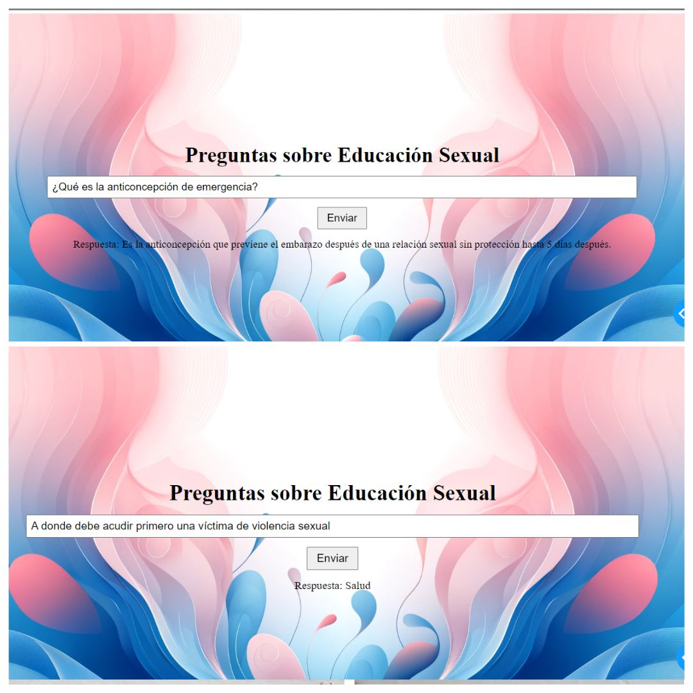
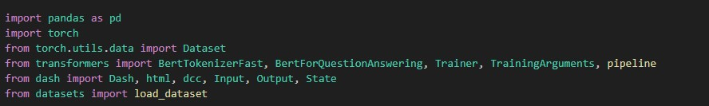
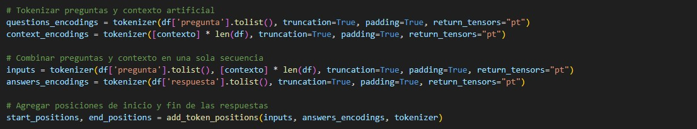
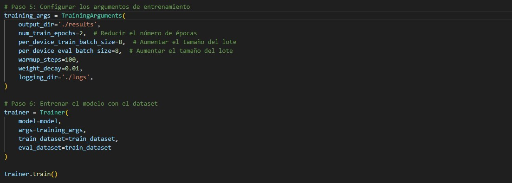
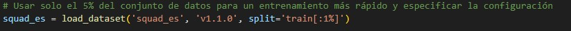
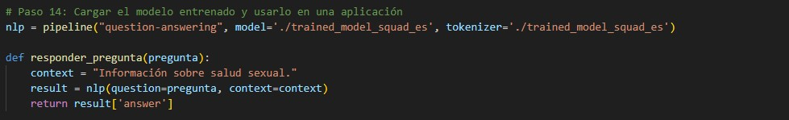
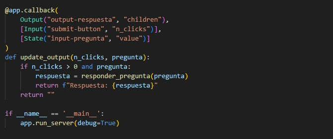

AI-based Chatbot (NLP)
The goal of this project is to develop an NLP-based chatbot to answer questions about sexual health, using a BERT model trained with custom data and the SQuAD-es dataset. The Dash application allows users to interact with the chatbot easily and efficiently. Although the chatbot has deficiencies in answering some questions, as seen in the second question in the initial image due to the limited data used given my computer's computational capacity, this project was a great learning experience for understanding the basic concepts of NLP models.
Creating the Environment
To start developing the chatbot, I installed the necessary libraries. I used pandas for data manipulation, torch for handling tensors and model training, transformers for using and training the BERT model, and dash for creating the web interface.
Data Cleaning
I used three datasets collected from the Open Data of Colombia page, provided by the Ministry of Health and Social Protection. The datasets used were:
1. Sexual Health - Question - Games - Phrase
2. Health and Social Protection
3. Sexual Health - Question - Games

I merged these into a global database with only two columns: Questions and Answers. Then I cleaned and adjusted the columns to ensure the data was in the correct format.
Tokenization Using Artificial Context
BERT is used to tokenize the questions and answers along with an artificial context, preparing them to be processed by the language model.
In this project, I used an artificial context to improve the accuracy of the question-answering model. The database used has a structure where each row contains a question and its corresponding answer, without additional context. In question-answering tasks, language models like BERT greatly benefit from having a broader context to better understand the questions and provide precise answers.
Configuring Arguments and Training
Here I loaded the pre-trained BERT model specific for question-answering tasks. The model was trained using the previously tokenized data.
Download the SQuAD-es Dataset
In addition to using my custom database of questions and answers about sexual health, I also employed the SQuAD-es dataset (SQuAD in Spanish). The use of SQuAD-es allows the model to be trained on a broader and more diverse corpus, enhancing its ability to handle a variety of questions in Spanish.
Then, I tokenized the SQuAD-es data. Tokenization is a crucial step where the questions and contexts are converted into token sequences that the model can process. With the SQuAD-es data tokenized, I proceeded to train the model again using these data. This additional training allows the model to learn from a broader and more diverse dataset, improving its response capability.
Load the Trained Model and Use It in an Application
In this project, after training the model using the SQuAD-es dataset, I configured a question-answering pipeline using the Hugging Face transformers library. This pipeline facilitates the use of the trained model to answer questions directly.
User Interface
The user interface was configured using Dash, allowing users to input questions and receive answers from the trained model.